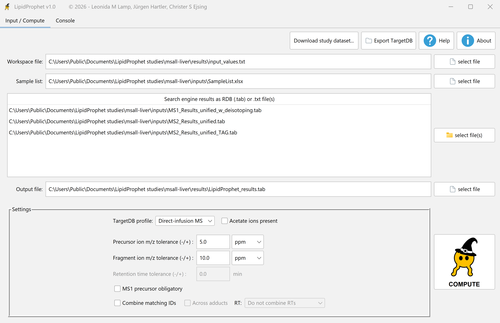
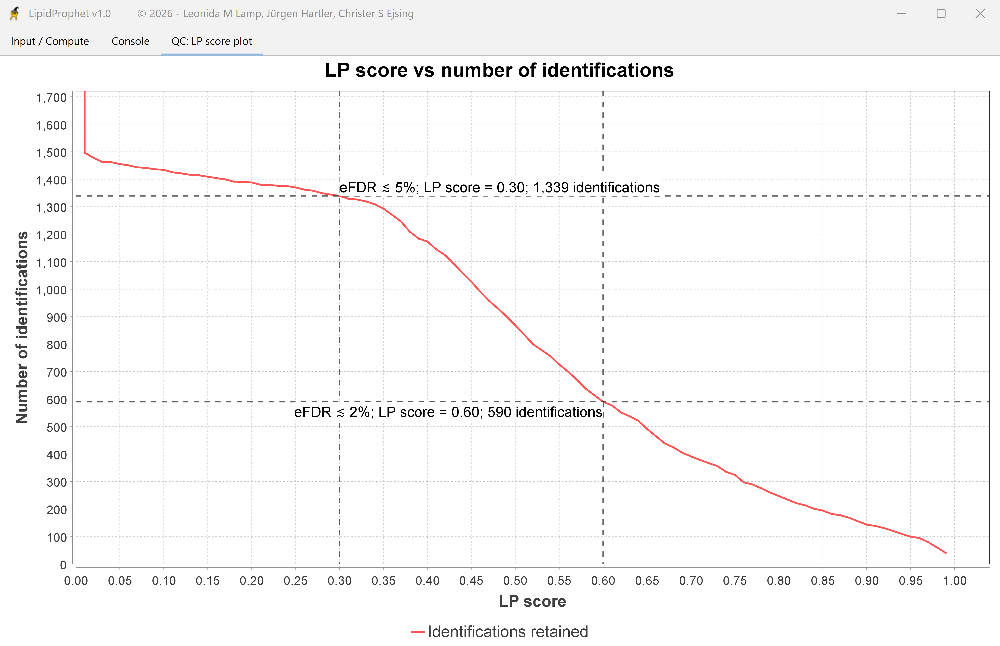

1. Bring the ALEX123 tables
Select the ALEX123 RDB .tab files for your acquisition. In the shotgun mouse liver study, select three tables: the MS1 precursor results, the MS² fragment results, and the separate MS² table for triacylglycerols (TAGs). Match the RAW_ID values in the tables to the rows of your SampleList worksheet. Set up the replicate groups.
2. Select the acquisition profile
Choose Direct-infusion MS. Set Acetate ions present to match the negative-mode ion chemistry, and enter the mass tolerances used for your precursor and fragment measurements. The retention-time field is inactive for direct infusion.


3. Compute and review the LP scores
Choose a workspace file and a .tab output. Click Compute and wait for the QC plot. Inspect the score curve, then apply your chosen cutoff to the result table.


For your final list, filter the exported table by LipidProphet score. Its rows follow the workspace’s export and grouping settings.
Choose Shotgun MSALL liver (ALEX123) in the study chooser to reproduce these screens. The liver package includes the reference output. For ALEX123, shotgun lipidomics, or score interpretation, contact Christer S. Ejsing.
To score a prepared study from a script, use the command-line example.